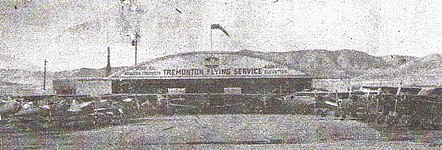

In the winter of 1952-53, Wayne Larsen, Sr., was approached by Tremonton City to become Tremonton's second airport manager. He accepted, knowing that things would be tough for awhile. The hangar front was painted to read "Airomotive Flying Service." Wayne, Sr. was involved in aircraft maintenance and began giving flying lessons. He became a crop duster in 1953, using a borrowed aircraft and signed his first lease with Tremonton City on March 2, 1953.



Things continued along as Wayne, Jr. and Bill grew up, spending some of their time at the airport. Wayne, Sr. accumulated aircraft that he used for crop dusting, giving flight instruction and having aircraft available for rent. It took long hours and much hard work to keep things going. There were improvements made at the airport. Runway lights were installed in the early 1960's and they were on every night. The T-hangars on the north were there. There were underground and above ground fuel tanks.
During the mid 1970's the name on the hangar was changed to "Airmotive Service." After being in a partnership with his dad for three years, Wayne Larsen, Jr. bought Airmotive Service from his father and became Tremonton Muncipal Airport's third manager on January 1, 1978. His brother, Bill, became his first full-time employee.
Tremonton City closed the Tremonton Airport on January 1, 2000. Wayne, Jr. and his brother, Bill, had spent their life at the Tremonton Airport. They are both aerial applicators and both aircraft mechanics, just like their dad. Also, they were involved in coyote hunting, dropping sky divers, looking for shrimp in the Great Salt Lake and doing aerial photography.
A move was necessary, Airmotive Service packed up and moved to the Brigham City Airport. There was a building there to rent and Wayne made arrangements for a hangar to be moved from the Tremonton Airport. We have bigger facilities in Brigham City and the business is still making improvements and moving forward here. Jeffrey Larsen, Wayne's son, is now working for his dad full-time as an A & P Mechanic.
There is always 'hangar talk' - stories to tell, unique experiences had, much to learn from and plans to be made for more adventures with flying machines. Flying has been and continues to be a great life! We are anxious to meet you. Come by and have a pretzel, and tell us about yourself...